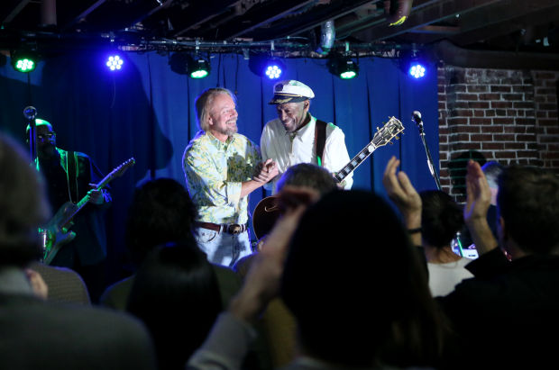

As a musician in STL, over the years I've developed a list of my favorite
venues based on overall sound, not only for patrons but musicians, and atmosphere.
In no particular order, this is what I've come up with:
Off Broadway is an intimate approx. 300 person venue that I love playing at.
The sound is always great, and the green room for artists is very eclectic and inviting.
Overall it just feels "cozy" and that's what I think I love most about it.
In fact, I love this venue so much it is where I've chosen to have my wedding this summmer!
Anytime I play the Ready Room it feels like a party. The overall sound
and lighting are up to par with some of the bigger venues in STL (like the Pageant),
but the intimacy that I enjoy is still there with a capacity of 750.
So you get a good mix of national acts and local bands that play,
but no matter if I'm opening for someone or headlining, that party atmosphere is always there.
Old Rock House is an "old" St. Louis Building that has had new life brought into it.
It's a very unique building that is almost shotgun style, so no matter where you are
in the building, you can see the stage. This is another venue that provides a good mix
of national and local acts headlining, but it bridges the gap between the Ready Room's
party atmosphere and Off Broadway's cozy vibe. Which makes it unique in its own way.
Delmar Hall is one of the most "professional" feeling venues I've
had the opportunity to play in. The company that owns it also owns the
Pageant so some of that atmosphere rubs off in this space. As a local musician
I rarely feel special, but this place made me feel as such. The green
room/backstage area lets you completely escape, which can be nice.
The crew and sound engineers are also really easy to work with and
very talented. Overall a great experience every time.
Foam
A view of Foam from the outside. Photo by
eventseeker
On the complete opposite side of the coin from Delmar Hall, Foam
is an extremely intimate venue in a catagory all on its own.
During the day, they're a coffee shop/bar. Serving up your favorite
lattes and drinks (and sometimes combining the two). But at night
it becomes a music venue. I love playing shows there because there
is truly no other place like it in St. Louis.
Atomic Cowboy
The Outdoor Pavilion Stage at Atomic Cowboy. Photo by
Atomic Cowboy
Atomic Cowboy is essentially 4 places in one: a restaurant,
a night club, and 2 music venues. There is an indoor and an outdoor
stage, providing for two completely different experiences. The indoor
stage is great for smaller shows, where the outdoor stage shines (no pun
intended) in the sunlight. Both are great places to play and see a show.
And it being in the heart of the Grove, it definitely brings a party
atmosphere as well.
The Duck Room

The Black Moods performing at the Duck Room. Photo by
Explore St. Louis
The Duck Room is located in the basement of Blueberry Hill in the
Delmar Loop. It was owned by the late Chuck Berry, so playing on that
stage is like playing on hallowed ground.
CBGB
Pillow Talk performing at CBGB. Photo by
Mabel Suen
CBGB is another very unique place in St. Louis. It is the
dive-iest of dive bars and playing there means cramming your
band and all equipment in what feels like a 4ft by 4ft space.
That aside,I've played some of my absolute favorite shows there
The energy is unmatched by any other venue I've played.
The Heavy Anchor
CaveofswordS at Synthfest at the Heavy Anchor. Photo by
zmcgowin
The Heavy Anchor is a solid venue that is gaining some popularity
and it rightfully deserves it. The way the venue is set up makes it always
feel full (which helps boost my little musicians ego). Also, the bar and
venue side are separated by an indoor garage door, which my millenial
side LOVES.